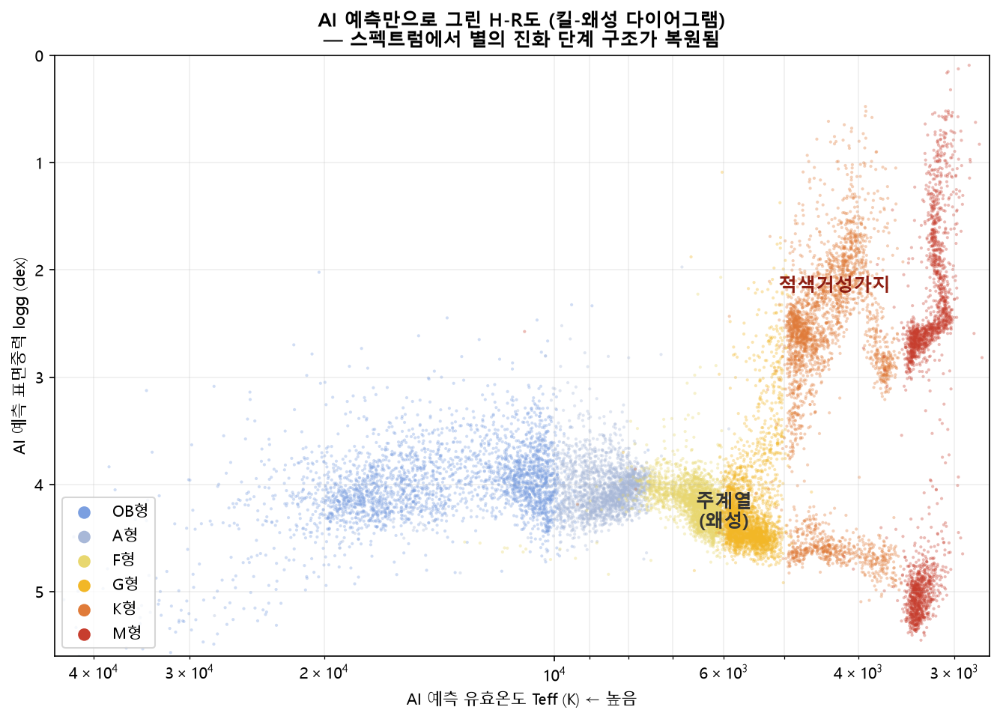

피커링의 두 눈,
AI로 재현하다
27만 개의 실제 관측 스펙트럼으로 학습한 AI가 분광형 · 광도계급 · 온도 · 표면중력을 한 번에 판정합니다. 그리고 100년간 축적된 천문 데이터베이스를 다시 점검합니다.
스펙트럼만으로 판정한다
FITS 파일을 열면 전처리부터 판정까지 자동으로 진행됩니다. 외부 정보는 일절 사용하지 않습니다 — 시선속도와 성간소광량까지 스펙트럼 스스로에게서 알아냅니다. 판정의 근거가 된 흡수선은 화면에 붉게 표시되어, AI의 결정을 눈으로 검증할 수 있습니다.
데이터 — 273,301개 스펙트럼
LAMOST · SDSS(MaStar/SEGUE) · MILES 4개 국제 서베이. Gaia DR3 크로스매칭으로 같은 별을 그룹화한 정답지 222,381행.
전처리 9단계
진공→공기 파장 변환, 도플러 보정, 성간소광 보정, 연속선 정규화 — 물리 변수를 통제해 별의 본모습만 남깁니다.
두 개의 눈 — CNN + MLP 앙상블
스펙트럼 전체를 학습하는 CNN(ResNet)과 물리 지표 39개(빈의 변위 법칙 · 사하-볼츠만 · 압력 넓어짐)를 입력받는 MLP. 두 판정이 어긋나면 특이 천체 경고.
검증 4단계
홀드아웃 → 5-fold 교차검증(97.7±0.06%) → 24만 개 전수검사 → 학습에 쓰지 않은 별도 망원경(VLT/X-shooter) 데이터 94.0%.
AI가 물리를 배웠다는 증거
모델이 예측한 온도와 표면중력만으로 별들을 배치하자, 천문학의 상징인 H-R도의 구조 — 주계열과 적색거성가지 — 가 그대로 나타났습니다. 데이터를 암기한 것이 아니라 별의 물리를 스펙트럼에서 읽어냈다는 뜻입니다.

100년의 기록을, 오늘의 눈으로
천문학의 표준 참고자료 SIMBAD의 분광형은 1890년대 사진건판 분류까지 거슬러 올라가는 소중한 축적 자료입니다. 본 프로그램은 469개 별을 독립 재판정하고 불일치를 문헌 온도로 심판하여, 갱신 검토가 필요한 후보 75개를 선별했습니다. 대표 사례 —
직접 실행해 보세요
코드 · 학습된 모델 · 테스트용 스펙트럼 4개가 공개되어 있습니다. 설치 후 한 줄이면 첫 별을 분류할 수 있습니다.